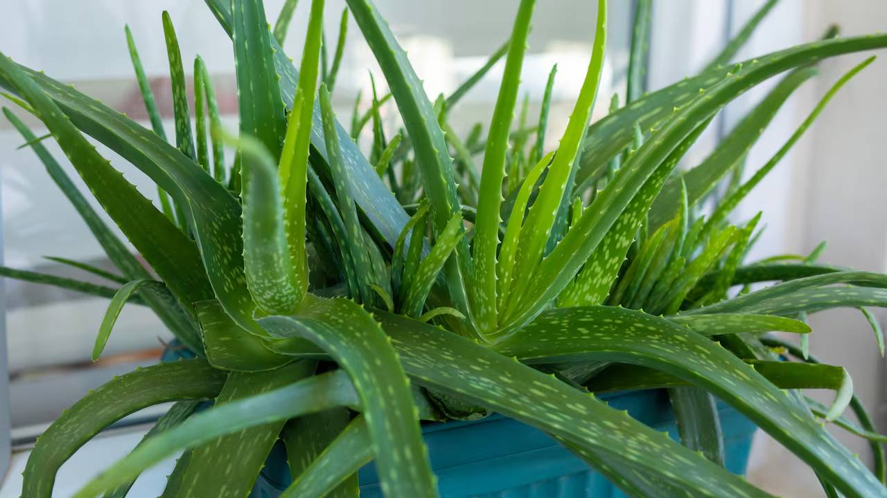

( Aloe Vera (Aloe barbadensis mille)
( En mixteco Yáá ndiko significa planta babosa o de savia espesa)

Originaria del norte de África y algunas zonas de Arabia, aunque hoy en día se cultiva en todo el mundo, especialmente en climas cálidos y secos como en partes de México.
💚 Propiedades medicinales
🔥 Cicatrizante y regeneradora
El gel de sábila ayuda a curar heridas, quemaduras leves, picaduras de insectos y cortes.
Estimula la regeneración celular y la producción de colágeno.
🧴 Cuidado de la piel
Muy útil para tratar el acné, la resequedad, la psoriasis y las manchas en la piel.
Se usa en cremas, geles y tratamientos caseros.
🌿 Digestiva (con precaución)
El jugo de sábila puede ayudar a aliviar el estreñimiento leve.
También apoya la limpieza intestinal y puede mejorar la digestión.
🛡 Inmunológica y antioxidante
Contiene vitaminas A, C, E y B, además de minerales como calcio, magnesio y zinc.
Refuerza el sistema inmunológico y combate radicales libres.
🧪 Formas de uso
1. Gel natural (uso externo):
Se extrae de la hoja y se aplica directamente en la piel para quemaduras, heridas o acné.
2. Jugo o agua de sábila (uso interno):
Se licua el cristal (lavado previamente) con agua o jugo de frutas. Se recomienda solo en pequeñas cantidades y ocasionalmente.
3. Mascarillas caseras:
Mezclado con miel, pepino, limón o avena para tratamientos faciales.
⚠ Precauciones
No consumir la parte amarilla (látex o aloína) que está entre la cáscara y el gel: puede causar irritación estomacal y diarrea.
Evitar su consumo frecuente o en exceso, ya que puede ser tóxico en grandes dosis.
No recomendada en embarazadas o mujeres lactando sin supervisión médica.
🌿 Cultivo básico
Luz: Mucha luz solar directa.
Riego: Muy poco; solo cuando la tierra esté seca (cada 1 o 2 semanas).
Suelo: Arenoso, con buen drenaje.
Reproducción: Por hijuelos (plantitas pequeñas que salen junto a la planta madre).
💡 Curiosidades
Los egipcios la llamaban la “planta de la inmortalidad”.
Cleopatra usaba sábila en su rutina de belleza.
Se usa en productos comerciales como shampoo, cremas, jugos, pomadas y desinfectantes naturales.
© 2025 Santo Remedio | San Mateo Peñasco, Oaxaca